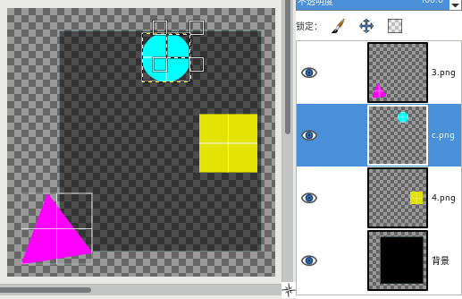
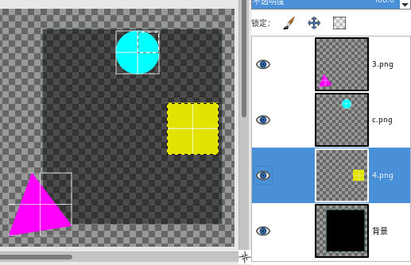
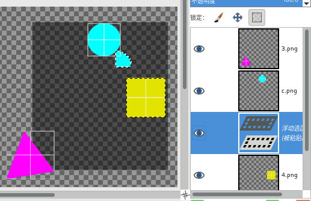
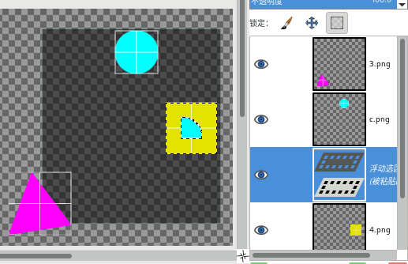

编辑→粘贴
快捷键：Ctrl+V
此命令会把之前复制或剪切到剪贴板中的内容粘贴到当前图像中。
粘贴到图像中的内容会创建一个浮动选区，浮动选区图层是专门存放浮动选区的临时图层。
提示
浮动选区稍微有点特殊，详细说明请参考浮动选区。
高级用户
错位/原位
由于图层的边界可以与画布边界不同，这导致粘贴到图像上之后的浮动选区，其在画布上的位置有可能不在原位；并且，当前是否存在选区，也会影响粘贴位置：
提示
图层边界与画布边界的说明，请参考图层尺寸示例。
在图像上画出一个选区以后，直接按Ctrl+C再按Ctrl+V，那么，粘贴位置会与复制位置完全一致，即“原位粘贴”。在这个操作过程中，按Ctrl+V的时候，原复制选区仍然存在，且Ctrl+C与Ctrl+V作用于同一图层。
在图像上画出一个选区以后，先按Ctrl+C，然后取消选区，再按Ctrl+V，那么，粘贴位置会放在整个图层的中心(注意是图层中心，不是画布中心)。 在这个操作过程中，按Ctrl+V的时候，原复制选区已经不存在，且Ctrl+C与Ctrl+V作用于同一图层。
在执行 编辑→粘贴(Ctrl+V) 命令时，如果复制选区范围在目标图层范围之内，那么粘贴位置与复制位置一致，即“原位粘贴”。在这个操作过程中，Ctrl+C与Ctrl+V作用于不同图层。
在执行 编辑→粘贴 命令时，如果复制选区范围在目标图层范围之外，那么粘贴位置与复制位置会不相同，即错位。在这个操作过程中，Ctrl+C与Ctrl+V作用于不同图层。
发生错位的情况下，会有两种情况：
在执行 编辑→粘贴(Ctrl+V) 命令时，复制选区仍然存在，这种情况下，粘贴位置会位于复制位置与目标图层之间。
在执行 编辑→粘贴(Ctrl+V) 命令时，复制选区已经不存在，这种情况下，粘贴位置会位于目标图层的中心。(注意是图层中心，不是画布中心)
提示
驿窗注：GIMP的编辑菜单中有3个带“原位”的粘贴相关命令：
这3个带原位的粘贴命令，主要就是针对错位问题的，具体功能描述请参考各个命令的说明。(GIMP软件本身并不存在粘贴 错位 这个说法，这里只是借用错位这个词来解释命令的功能)
为了更容易理解，我们来看一下示例(示例图像的要素，请参考图像→对齐可见图层⇒示例图像)：
原图：青色圆形所在图层是选中图层，且在其中画了一个矩形选区，选中了四分之一圆，执行菜单 编辑→复制(Ctrl+C)。青色圆形周围的黑黄虚线框是图层范围边界线；另一个小的黑白虚线框是当前的四分之一圆选区。
第一步，原图，选区为四分之一圆
选中黄色正方形所在图层：黄色正方形周围的黑黄边框是其图层范围边界线。上方的四分之一圆选区仍然存在。
第二步，选中黄色正方形所在图层
在第二步的基础上执行菜单 编辑→粘贴(Ctrl+V)：图层堆栈中，黄色正方形所在图层上方出现浮动选区图层。四分之一圆被粘贴的位置，在原四分之一圆选区的位置和黄色正方形的位置之间，产生错位。
第三步，执行 编辑→粘贴 命令
回到第一步的原图，在原图基础上，选中黄色正方形所在图层，并且取消当前四分之一圆选区：黄色正方形周围的黑黄边框是其图层范围边界线。上方的四分之一圆选区已经消失。

第四步，回到原图，选择黄色正方形图层，四分之一圆选区消失
从第四步的状态执行 编辑→粘贴(Ctrl+V)：四分之一圆被粘贴的位置，在黄色正方形图层范围的正中心。
第五步，从第四步执行 编辑→粘贴 命令，四分之一圆粘贴位置与第三步不同
从上面的示例中可以看出，图层范围会对粘贴位置产生影响，这种情况下，可以考虑使用上面提到的三个与原位相关的粘贴命令。